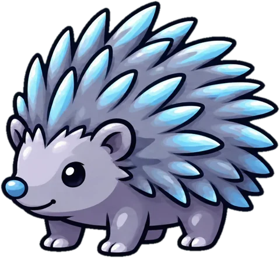

Tap a stage to read its story.
A small round porcupine-shaped creature with a pale grey-blue body and a full coat of short ice-tipped quills that rattle when it walks, Frostquill huddles on the lower ridges of storm spire where the cold winds begin. Its tiny face peers out between front quills with dark round eyes. When frightened, all its quills fan outward at once with a sound like a handful of icicles dropped on stone. It finds warmth by burrowing under the frost-moss that clings to spire rocks.
Field note: On cold mornings Frostquill's quill tips grow tiny ice crystals that it shakes off before breakfast like frost off a window.
Storm Spire. Frostquill and its family are found in the Storm Spire. See everyone who lives there.
Share a Bond Food that matches its types to become friends. Frostquill loves:
A Bond Food is not a trick. It joins your spirit with the Kimuro's spirit, and only when it chooses you.
Print the Kimuro adventure packs: mazes, cards, a board game and Bond Mark medals.
See the printable packs